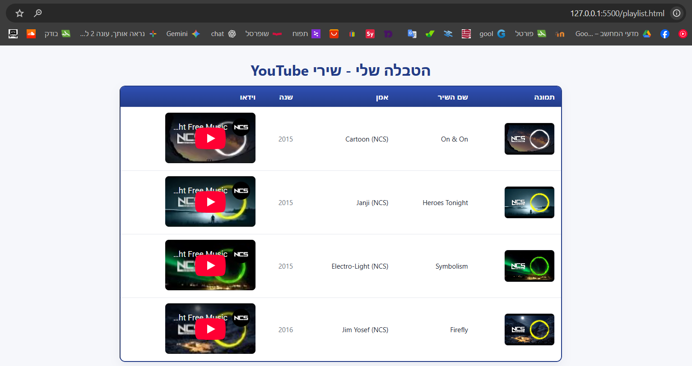
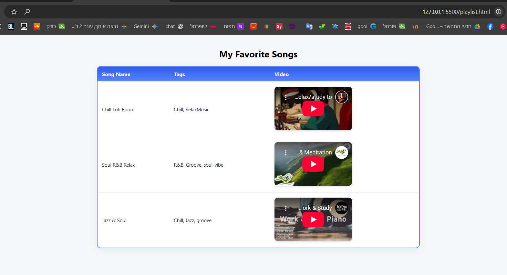
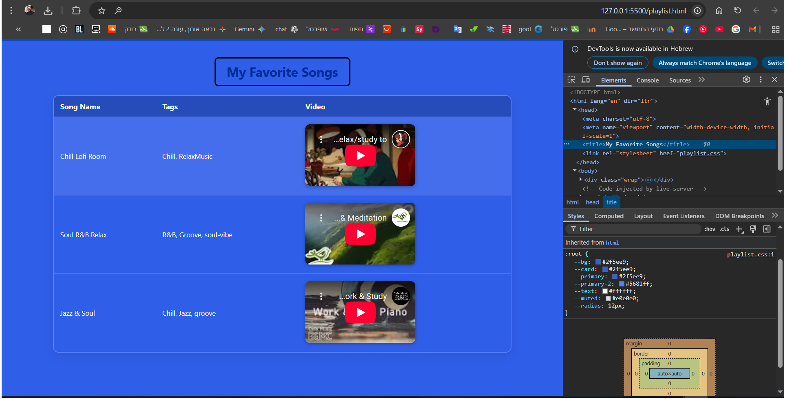
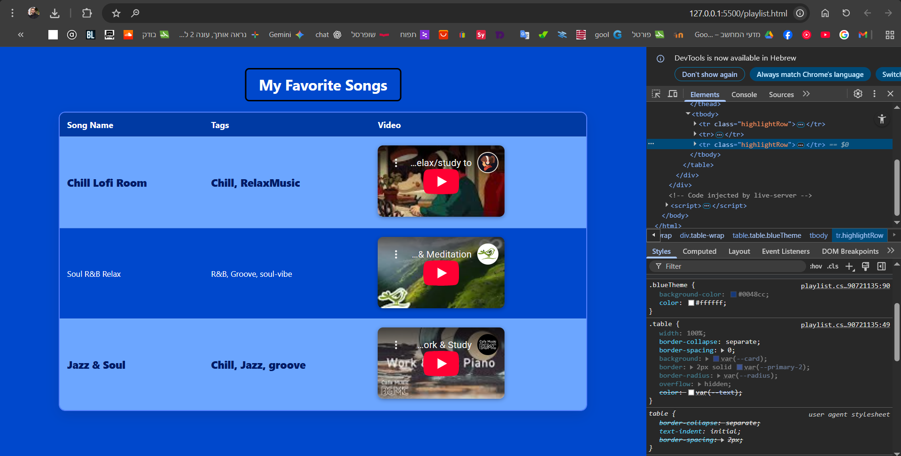
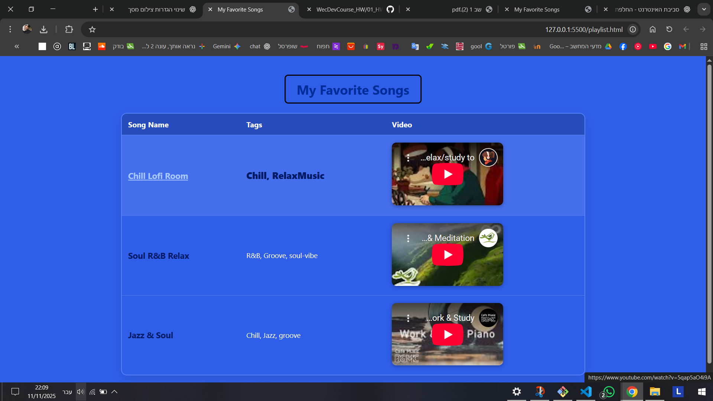
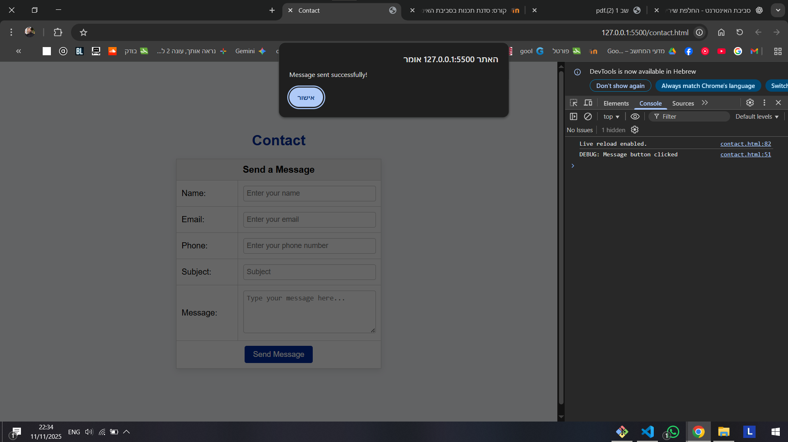
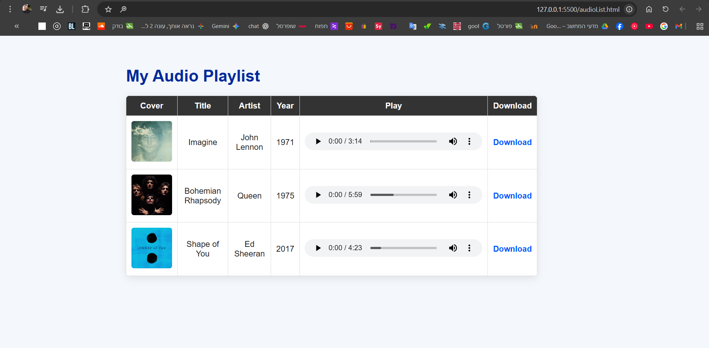
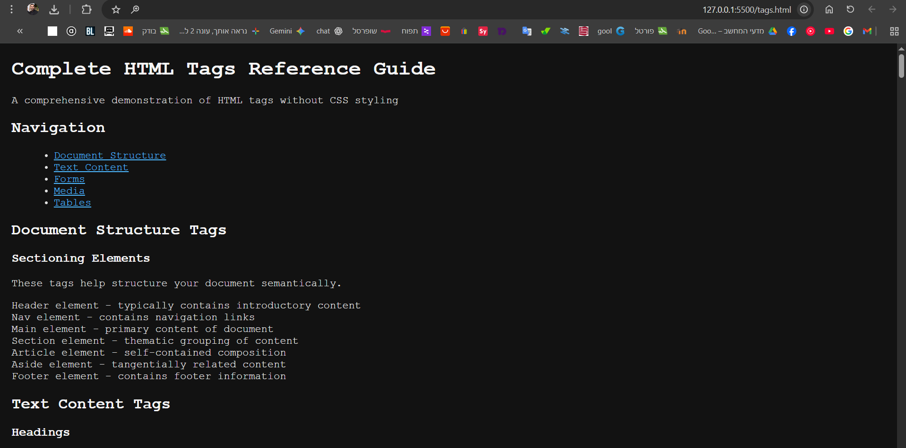
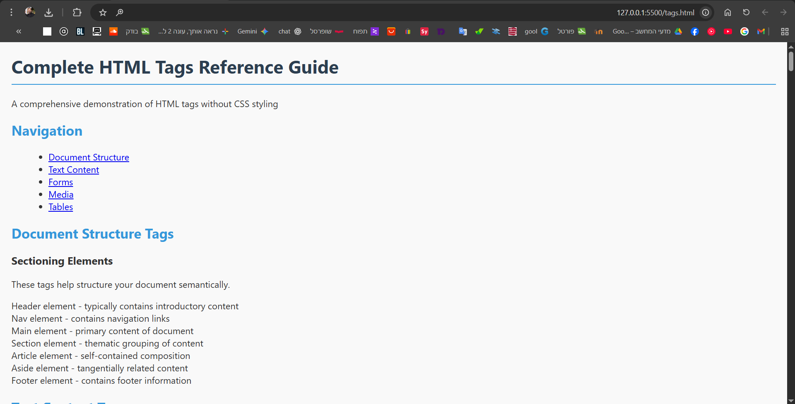
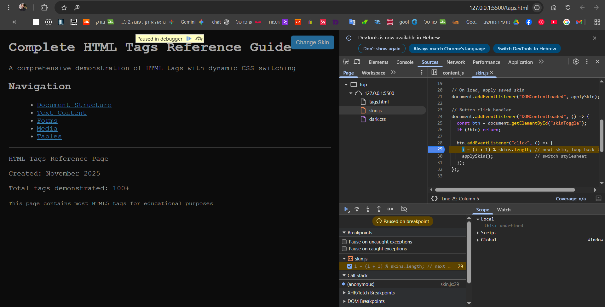

להלן כל צילומי המסך שבוצעו בשלבים הקודמים, כולל קישורים ל-Commit בגיטהאב:
| שלב | תמונה | קישור ל-Commit (GitHub) |
|---|---|---|
| 1 |  |
Commit – Add 1 screenshot |
| 2 |  |
Commit – Add playlist.html and playlist.css |
| 3 |  |
Commit – Updated playlist-favorite songs |
| 4 |  |
Commit – 2 screenshot |
| 5 |  |
Commit – section 12-13-14 |
| 6 |  |
Commit – section 15 |
| 7 |  |
Commit – section 17-18-19 |
| 8 |  |
Commit – audioList |
| 9 |  |
Commit – section 25-26 |
| 10 |  |
Commit – section 27 |